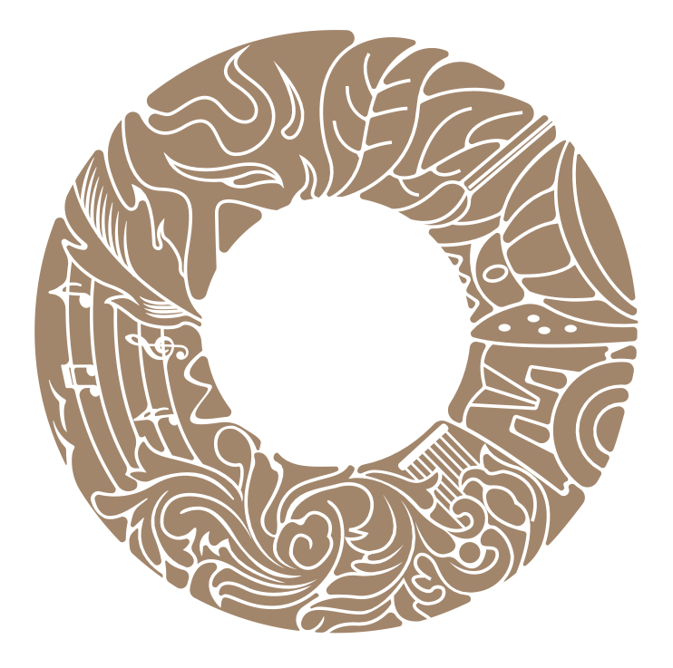
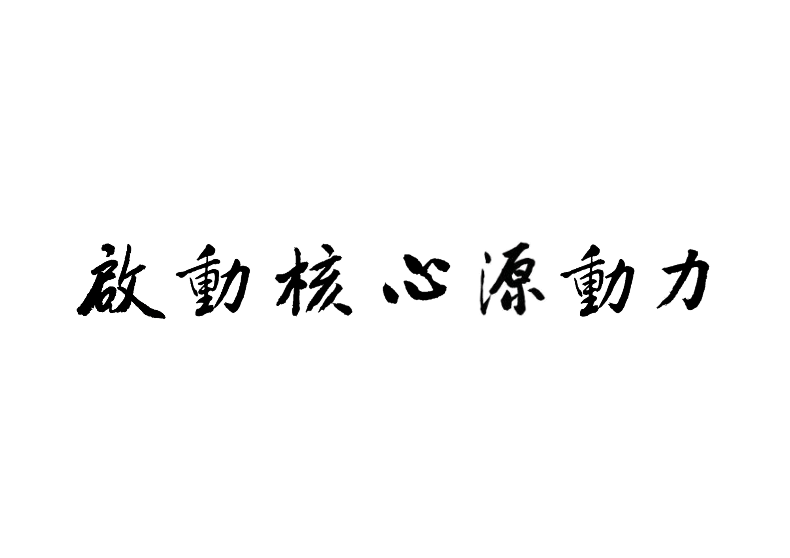

Ignite the Inner Source of Power
Réveiller l’élan vital du cœur
أيقِظ طاقة الجوهر الأولى
透過傳統智慧、愛的教育與對話，培養面向未來世代的品格、福祉與和平。
核心理念
真正的和平
始於人心
我們相信，每個人都擁有推動自身成長、家庭和諧、社會進步與世界和平的內在力量。
基金會透過教育、文化與文明對話，啟發並培養這份核心原動力，讓傳統智慧在當代世界成為清明、溫柔而堅定的公共力量。
了解更多
01
愛的教育
Love Education
02
青少年身心健康
Youth Well-being
03
文明對話
Intercultural Dialogue
04
傳統智慧
Traditional Wisdom
了解更多
旗艦項目
以教育、經典與國際論壇
建立面向未來的和平平台
了解更多
資源中心
傳統智慧 · 世界共享
《群書治要》THE GOVERNING PRINCIPLES OF ANCIENT CHINA 是基金會推動傳統智慧全球共享的重要出版與翻譯計劃。
中文
English
Français
Deutsch
Русский
Español
العربية
日本語
了解更多
最新論壇
2025 世界和平論壇於 UNESCO 舉行
基金會共同協辦 International Peace Conference on Education for Well-being 2025，聚焦青少年身心健康、幸福教育與文明對話。
查看活動 Programme
了解更多
論壇
出版物
教育
了解更多